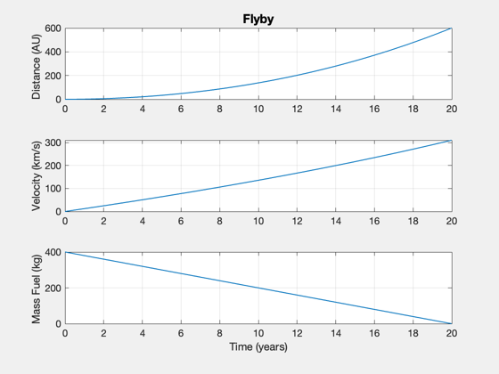

Demo of an optimal flyby mission to the Solar Gravitational Lens
------------------------------------------------------------------------
See also: FlybyOptimalImpulse, FlybyReport, SimulateFlyby,
Straight2DStructure, DisplayLatexTable
------------------------------------------------------------------------
payload = 300;
nAU = 600;
nYear = 20;
fTank = 0.03;
aU = Constant('au');
year = 365*86400;
d = Straight2DStructure;
d.f = fTank;
d.mP = payload;
d.dF = nAU*aU;
d.eta = 0.4;
d.sigma = 1*1000;
d.tF = nYear*year;
uEOpt = FlybyOptimalImpulse( d );
d.uE = uEOpt;
[s,data] = FlybyReport(payload,d);
DisplayLatexTable( s )
SimulateFlyby( data )
---- Flyby ----------- -- --
---- INPUTS ----- -- --
Final position 600.00 AU
Final time 19.99 yr
Mass payload 300.00 kg
---- ENGINE ----- -- --
Exhaust Velocity 620.82 km/s
Specific power 1000.00 kW/kg
Efficiency 0.40
---- OUTPUTS ----- -- --
Payload Mass Fraction 0.29 mP/m0
Payload Power Fraction 0.98 kg/kW
Final velocity 310.36 km/s
Fuel 401.10 kg
Mass Total 1019.51 kg
Mass Engine 306.38 kg
Power 0.31 MW
Thrust 0.39 N
Final position simulation 599.97 Distance (AU)
Final velocity simulation 310.36 km/s
Final time simulation 19.99 year
